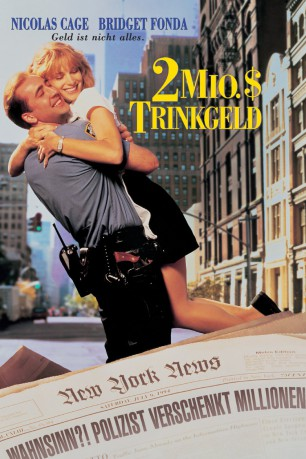
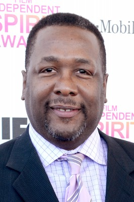
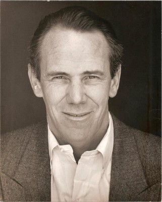
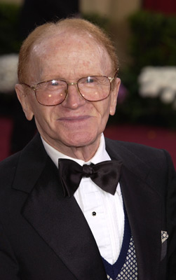
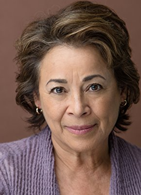

#3002 2 Millionen Dollar Trinkgeld
Alternativ: It Could Happen to You
 
 IMDB-Wertung: 6.3 / 10
IMDB-Wertung: 6.3 / 10  Metascore: 64
Metascore: 64 
4 Millionen Dollar haben der New Yorker Cop Charlie Lang (Nicolas Cage) und sein geldgierig-zänkisches Eheweib (Rosie Perez) beim Lottospielen gewonnen. Doch Charlie will zwei Millionen Dollar abgeben. Und zwar an die Kellnerin Yvonne (Bridget Fonda), der er, mangels Trinkgeld, am Tag zuvor noch aus Spaß die Hälfte seines Lottogewinns versprach. Während seine Frau tobt, verliebt sich Charlie auch noch in die hübsche Kellnerin.
Jahr: 1994
Dauer: 101 Minuten
FSK: 6
Land: USA Studio: TriStar PicturesTonspuren:
Untertitel: Deutsch,
Auflösung: 1080p (1920x1040) Größe: 5877 MB
Genre: Drama, Komödie, Liebe
Regisseur: Andrew Bergman
Drehbuch: Jane Anderson
Soundtrack: Carter Burwell
Darsteller:
 Nicolas Cage als Charlie Lang
Nicolas Cage als Charlie Lang Bridget Fonda als Yvonne Biasi
Bridget Fonda als Yvonne Biasi Rosie Perez als Muriel Lang
Rosie Perez als Muriel Lang-  Wendell Pierce als Bo Williams
 Isaac Hayes als Angel Dupree
Isaac Hayes als Angel Dupree- Víctor Rojas als Jesu
 Seymour Cassel als Jack Gross
Seymour Cassel als Jack Gross Stanley Tucci als Eddie Biasi
Stanley Tucci als Eddie Biasi-  J.E. Freeman als Sal Bontempo
-  Red Buttons als Walter Zakuto
 Richard Jenkins als C. Vernon Hale
Richard Jenkins als C. Vernon Hale- Charles Busch als Timothy
 Rene Rivera als Julio
Rene Rivera als Julio Vincent Pastore als Bowling Team Member #1
Vincent Pastore als Bowling Team Member #1- Barry Squitieri als Bowling Team Member #2
 Emily Deschanel als Paint Throwing Fur-Activist
Emily Deschanel als Paint Throwing Fur-Activist- Willie Colón als Mayor
 Frank Pellegrino als Water's Edge Maitre D'
Frank Pellegrino als Water's Edge Maitre D'- John Louis Fischer als Plaza Bellhop
- Kaipo Schwab als Plaza Bellhop
- John Norman Thomas als Mr. Muktananda
 Ann Dowd als Carol
Ann Dowd als Carol Peter Jacobson als Television Reporter
Peter Jacobson als Television Reporter- Alan Muraoka als Television Reporter
- Brenda Pressley als Television Reporter
- Julia Campanelli als Bowler's Wife , uncredited
- Mark Gorham als Television Reporter , uncredited
- Jos Laniado als Businessman , uncredited
-  Alma Martinez als Juror , uncredited
 Nick Taylor als News Man , uncredited
Nick Taylor als News Man , uncredited- George Vincent als Cab Driver , uncredited
- Robert Dorfman als Walter
- Beatrice Winde als Judge
- Ginny Yang als Mrs. Sun
 Angel David als Esteban
Angel David als Esteban- Anna Lobell als Korean Deli Customer
- Claudia Shear als Muriel's Customer
- Jimmy Sabater als Fry Cook
- Merwin Goldsmith als Bankruptcy Judge
- Phil Stein als Bowling Team Member #3
- Jerome Turner als Bowling Team Member #4
- George J. Manos als Loto Official
- Edward Goldstein als Candy Store Owner
- Ranjit Chowdhry als Mr. Patel
- Pedro Pietri als Homeless Man in Coffee Shop
- Charles B. Lowlicht als Passersby at Subway Station #1
- Jed Krascella als Passersby at Subway Station #2
- Bob Sheppard als Yankee Stadium Announcer
- Kathleen McNenny als Plaza Desk Clerk
- Candece Tarpley als Bo's Wife
Datei: X:\1994\2 Millionen Dollar Trinkgeld (1994, FSK6, 1920x1040).mkv seit 16.01.2016
Festplatte: HD 1992-1995
 Es gibt insgesamt 67 Filme in der Gruppe '1994'
Es gibt insgesamt 67 Filme in der Gruppe '1994'